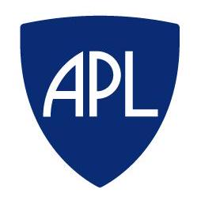

I am a solar and space physics researcher working at the Johns Hopkins University Applied Physics Laboratory (APL) in the USA. I was born and raised in Athens, the birthplace of democracy, arts, science and philosophy of western civilisation, and the capital of Greece. I have studied Physics at the University of Patras, the third-largest city and the regional capital of Western Greece, in the northern Peloponnese. Then, I obtained an M.Sc. in Astronomy, Astrophysics, and Mechanics from the University of Athens which is the oldest higher education institution in modern Greece. In 2018, I received my PhD in Physics from the University of Ioannina one of the leading academic institutions in Greece. During my PhD, I studied the physics of shock waves in the solar corona and interplanetary space. I coninued with my post-doctorate research at the Institut de Recherche en Astrophysique et Planétologie, at Toulouse in France, for four years.
From the beginning of 2022, I moved to Maryland where I am working as an early career scientist for the Solar Section within the Space Exploration Sector’s Space Research Group of APL. APL is the largest university-affiliated research centre in the USA and it is among the leading centres for innovation and essential research. APL has named the No. 3 Most Innovative Space Companies in 2022 and has earned three consecutive elections to the Best Workplaces for Innovators. I am also a research scientist for the Suprathermal Ion Spectrograph (SIS) instrument onboard the Solar Orbiter. The Solar Orbiter mission is an ESA-led mission with strong NASA participation and launched from Cape Canaveral on 10 February 2020.
Overall, my research activities centre on the properties of shock waves in the solar corona and interplanetary space, the properties of solar energetic particles, solar radio-physics, and space weather. I embrace every research opportunity, and I work enthusiastically trying to produce scientific results that are at the cutting edge of solar and space physics research. I have broad collaborating experience and my participation in various research projects have advanced my skills in various topics. My expertise is broad in the analysis and interpretation of in-situ data and remote sensing solar observations in different spectral domains that are collected by various spacecraft instrumentation onboard NASA and ESA space missions. These datasets allow me to study shock waves, eruptive events, solar energetic particles, solar radio and gamma-ray emission from the Sun. I have more than 30 Publications in high-impact international peer-review Journals and numerous presentations at international conferences. I have refereed articles for numerous international Journals in the field, including The Astrophysical Journal and the Astronomy and Astrophysics journal.